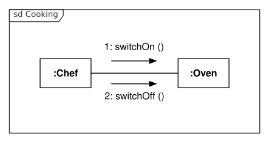

Quevedo Datasets¶
Quevedo datasets consist of source images, annotations on those images, and other metadata that can help with their interpretation. While it can be used for less complex images, Quevedo's focus is on images with compositional meaning, such as constitute visual languages, like UML, or complex writing systems, like SignWriting or musical notation.

Example of an UML communication diagram (source: Oemmler @ Wikipedia)
{kind=link}

Example of a SignWriting transcription representing the ASL sign for "SignWriting" (source: Slevinski @ Wikipedia)
{kind=link}
 An example of modern musical notation: Prelude, Op. 28, No. 7, by Frédéric Chopin
(source: Prof.rick @ Wikipedia)
An example of modern musical notation: Prelude, Op. 28, No. 7, by Frédéric Chopin
(source: Prof.rick @ Wikipedia)
{kind=link}
Logograms and Graphemes¶
Quevedo recognises two types of source images: logograms and graphemes. Graphemes are atomic, individual symbols that represent some particular meaning in the target visual language, while logograms are images made up of graphemes in complex and meaningful spatial arrangements. In the UML example above, the different boxes, arrows and characters are graphemes. In the SignWriting example, the hand symbols along with the arrows indicating movement are the graphemes. In the sheet music excerpt, one can identify the notes, accidentals and other symbols as graphemes. As for logograms, what constitutes a logogram depends on the target language and the goal of the researcher, but to Quevedo, any logogram is an image file where graphemes are arranged according to some underlying meaning.
The names logogram and grapheme come from the original problem for which Quevedo has been designed, which is automatic recognition of visual languages, but the software imposes little meaning to the terms beyond the fact that graphemes are independent and atomic, and logograms are composed of spatially arranged graphemes. Therefore, Quevedo can be used to manage datasets for problems of varying complexity, as long as the source data are images with some compositional structure.
Annotation of logograms and graphemes¶
One of the characteristics of visual writing systems is that they can encode multiple meanings within a single symbol, taking advantage of the possibilities offered by the visual medium. In Quevedo, annotation consist not of a single tag, but rather of an ordered list of tags. This allows different systems to peruse different aspects of the symbols' meaning, and also lets researchers experiment with different, simultaneous and possibly overlapping annotation schemas for the dataset.
Each grapheme in the dataset has one such list of tags associated, manually entered by an annotator or automatically filled by some process. Logograms, on the other hand, don't have these tags directly, but rather in the graphemes they contain. Logograms are annotated by marking the different graphemes contained within them, and then tagging each grapheme with the tags from the tag schema. Additionally, both graphemes and logograms can have "meta" tags which represent other information. This can be used to store information about the filenames, the source of the data, or in the case of logograms, information about the logogram itself not associated with any particular grapheme.
(TODO: image)
Dataset structure¶
Each Quevedo dataset is a directory on disk, containing a configuration file
config.toml, and a number of directories. (TODO: link config)
Annotations are stored in subdirectories of the logograms and graphemes
directories (depending on their type). Each subdirectory represents a data
subset, which can be used to perform different experiments on different sets, or
just to organize data in some meaningful way.
Annotations in each subset consist of two files: <number>.png and
<number>.json. The .png file is the source image, in PNG format, and the
.json file contains the annotations in JSON format. These are standard
formats, so annotations in a Quevedo dataset can be read and modified by
external tools and inspected by humans. The annotations are sequentially
numbered, so corresponding images and json files are easily found.
There are two additional directories which Quevedo uses: networks and
scripts. In the networks directory, the training configuration and weight
files for each different neural network are stored (TODO: link networks). Each
network has a name, and its files are all organized in the subdirectory of
networks with the network name.
The scripts directory can contain useful scripts for additional management of
the dataset. For example, a researcher can store the .r scripts used to
evaluate different metrics on the dataset, or shell scripts to process images or
extract annotation information. A special case are python files (ending in
.py) which Quevedo can understand (TODO: link scripts)
dataset_root
├─ config.toml
├─ logograms
│ ├─ subset_1
│ │ ├─ 1.png
│ │ ├─ 1.json
│ │ ├─ 2.png
│ │ ├─ 2.json
│ │ └─ ...
│ └─ other_subset
├─ graphemes
│ ├─ subset_1
│ │ ├─ 1.png
│ │ ├─ 1.json
│ │ └─ ...
│ └─ other_subset
├─ networks
│ ├─ network_1
│ │ ├─ train
│ │ ├─ darknet.cfg
│ │ ├─ darknet_final.weights
│ │ ├─ results.json
│ │ └─ ...
│ └─ network_2
└─ scripts
Example of a Quevedo dataset directory structure
Interaction with git and DVC¶
Since Quevedo datasets are directories on disk, and the different files use standard formats, Quevedo datasets can interact nicely with other tools, such as git and DVC. In particular, a Quevedo dataset can also be a git repository, and therefore a DVC repository too. This can help with dataset sharing and experiment reproducibility. We recommend using git to track configuration files and scripts, and DVC to track source data, annotations, and experiments.